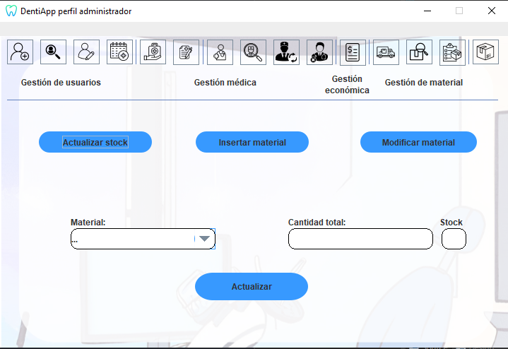

Ayuda: Actualizar Stock
Los siguientes pasos le guiarán a través del proceso de actualizar
el stock de un material:
- Seleccionar el material a actualizar: Seleccionar en el desplegable
(Material) el material del que queremos actualizar el stock.
- Especificar cantidad total: Después de especificar el material,
especifique la cantidad total del material en el campo de busquda (Cantidad Total).
- Campo stock: Muestra la cantidad de material antes de insertar más.
- Actualizar stock: Una vez que haya agregado el material
deseado y
la cantidad total, haga clic en el botón "Actualizar" para cambiar el stock del material especificado.

Si tiene alguna pregunta o necesita ayuda adicional,
no dude en comunicarse con nosotros.